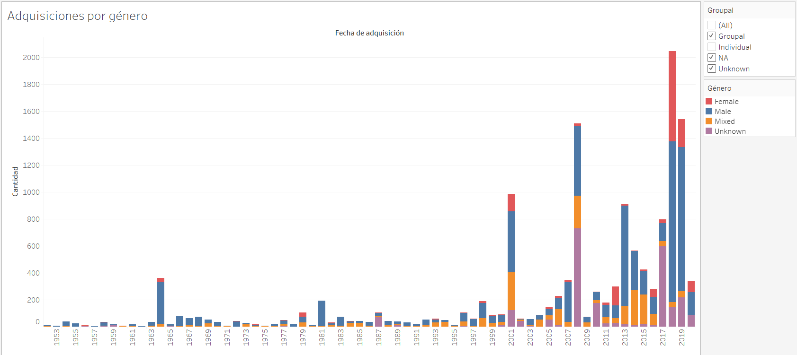
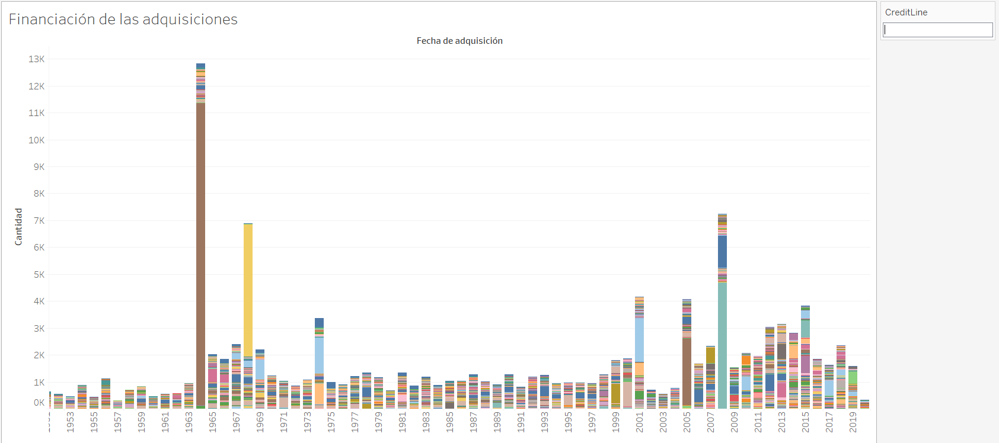
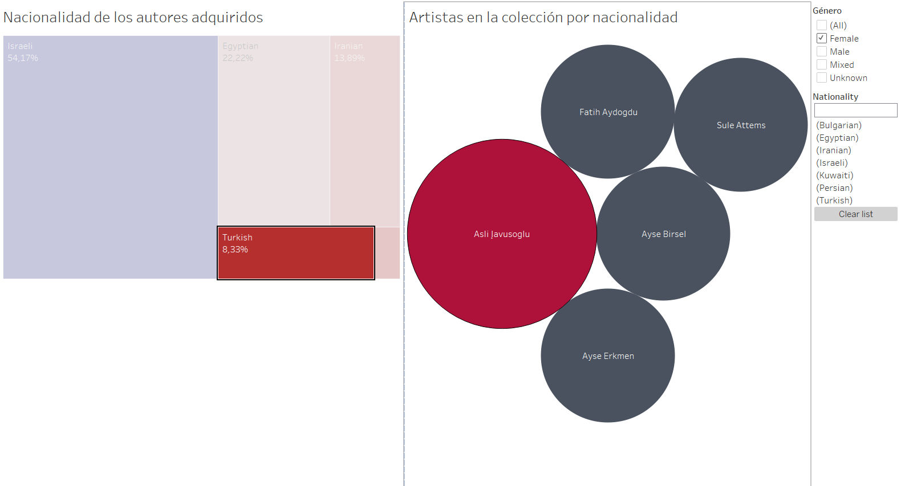
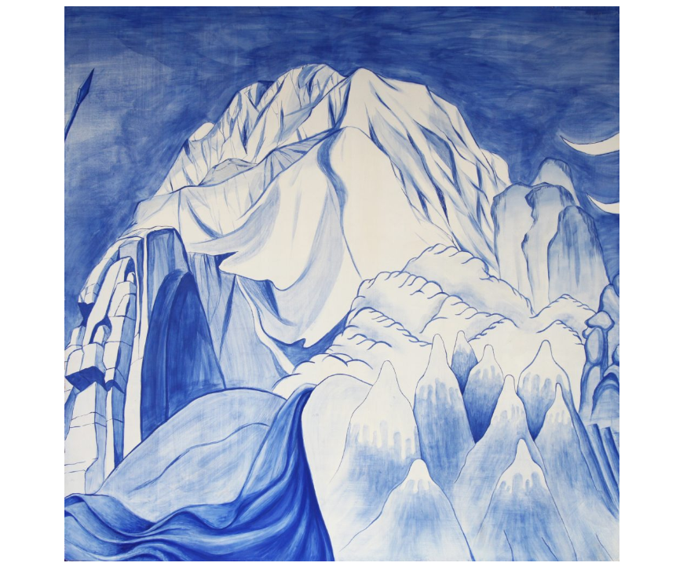

PRA2 Visualización de datos
En la primera de las imágenes se observan varias cosas. Primero, las obras de un sólo artista han copado la mayoría de las adquisiciones del museo. Segundo, las obras de artistas mixtos, mujeres o género desconocido, sufren un boom en 2001. Tan sólo 1964 fue comparable, pero recordemos que este año es el que más adquisiciones hace el museo.
La segunda es extremadamente simple, mantiene todas las adquisiciones según vía crediticia, lo que nos enseña que un año especialmente prolífico no se debe a ninguna política de adquisición concreta, sino que el museo depende de los grandes donantes para continuar aumentando su colección.
La siguiente nos muestra una decisión del museo que debe ser consciente. Jugando en este filtro con las nacionalidades, podemos ver que los países occidentales aportan artistas de períodos mucho más antiguos que el resto de países. Claramente esto supone una respuesta a las corrientes decoloniales que se comienzan a dar con la entrada del siglo XXI.
En esta comparación podemos ver la comparación de una selección de países africanos con respecto a Bélgica (en verde)
Por último, en nuestra herramienta favorita podemos hacer una búsqueda de artistas mujeres de oriente medio tan sólo haciendo un par de clics.
En esta primera imagen se ve además la predominancia lógica de Israel entre los artistas del museo.
Pero clicando en Turquía, nos encontramos con 5 artistas mujeres que han conseguido exponer en uno de los museo de arte moderno más famosos del mundo.
Os presentamos la obra de Aslı Çavuşoğlu:
